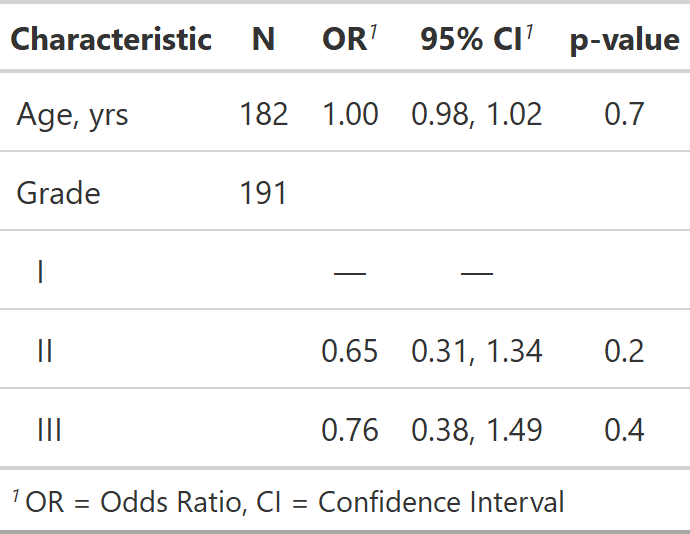
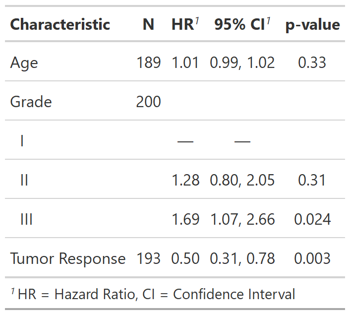

R/tbl_uvregression.R
tbl_uvregression.RdThis function estimates univariate regression models and returns them in a publication-ready table. It can create univariate regression models holding either a covariate or outcome constant.
For models holding outcome constant, the function takes as arguments a data frame,
the type of regression model, and the outcome variable y=. Each column in the
data frame is regressed on the specified outcome. The tbl_uvregression
function arguments are similar to the tbl_regression arguments. Review the
tbl_uvregression vignette
for detailed examples.
You may alternatively hold a single covariate constant. For this, pass a data
frame, the type of regression model, and a single
covariate in the x= argument. Each column of the data frame will serve as
the outcome in a univariate regression model. Take care using the x argument
that each of the columns in the data frame are appropriate for the same type
of model, e.g. they are all continuous variables appropriate for lm, or
dichotomous variables appropriate for logistic regression with glm.
tbl_uvregression( data, method, y = NULL, x = NULL, method.args = NULL, formula = "{y} ~ {x}", exponentiate = FALSE, label = NULL, include = everything(), exclude = NULL, hide_n = FALSE, show_single_row = NULL, conf.level = NULL, estimate_fun = NULL, pvalue_fun = NULL, show_yesno = NULL, tidy_fun = NULL )
| data | Data frame to be used in univariate regression modeling. Data frame includes the outcome variable(s) and the independent variables. |
|---|---|
| method | Regression method (e.g. lm, glm, survival::coxph, and more). |
| y | Model outcome (e.g. |
| x | Model covariate (e.g. |
| method.args | List of additional arguments passed on to the regression
function defined by |
| formula | String of the model formula.
Uses glue::glue syntax. Default is |
| exponentiate | Logical indicating whether to exponentiate the
coefficient estimates. Default is |
| label | List of formulas specifying variables labels,
e.g. |
| include | Variables to include in output. Input may be a vector of
quoted variable names, unquoted variable names, or tidyselect select helper
functions. Default is |
| exclude | DEPRECATED |
| hide_n | Hide N column. Default is |
| show_single_row | By default categorical variables are printed on multiple rows. If a variable is dichotomous (e.g. Yes/No) and you wish to print the regression coefficient on a single row, include the variable name(s) here--quoted and unquoted variable name accepted. |
| conf.level | Must be strictly greater than 0 and less than 1. Defaults to 0.95, which corresponds to a 95 percent confidence interval. |
| estimate_fun | Function to round and format coefficient estimates. Default is style_sigfig when the coefficients are not transformed, and style_ratio when the coefficients have been exponentiated. |
| pvalue_fun | Function to round and format p-values.
Default is style_pvalue.
The function must have a numeric vector input (the numeric, exact p-value),
and return a string that is the rounded/formatted p-value (e.g.
|
| show_yesno | DEPRECATED |
| tidy_fun | Option to specify a particular tidier function if the
model is not a vetted model or you need to implement a
custom method. Default is |
A tbl_uvregression object
Example 1

Example 2

If you prefer to consistently use a different function to format p-values or estimates, you can set options in the script or in the user- or project-level startup file, '.Rprofile'. The default confidence level can also be set.
The N reported in the output is the number of observations
in the data frame model.frame(x). Depending on the model input, this N
may represent different quantities. In most cases, it is the number of people or
units in your model. Here are some common exceptions.
Survival regression models including time dependent covariates.
Random- or mixed-effects regression models with clustered data.
GEE regression models with clustered data.
This list is not exhaustive, and care should be taken for each number reported.
See tbl_regression vignette for detailed examples
Other tbl_uvregression tools:
add_global_p.tbl_uvregression(),
add_nevent.tbl_uvregression(),
add_q.tbl_uvregression(),
bold_italicize_labels_levels,
bold_p.tbl_stack(),
bold_p.tbl_uvregression(),
inline_text.tbl_uvregression(),
modify_header(),
sort_p.tbl_uvregression(),
tbl_merge(),
tbl_stack()
tbl_uv_ex1 <- tbl_uvregression( trial[c("response", "age", "grade")], method = glm, y = response, method.args = list(family = binomial), exponentiate = TRUE ) # rounding pvalues to 2 decimal places library(survival) tbl_uv_ex2 <- tbl_uvregression( trial[c("ttdeath", "death", "age", "grade", "response")], method = coxph, y = Surv(ttdeath, death), exponentiate = TRUE, pvalue_fun = function(x) style_pvalue(x, digits = 2) ) # for convenience, you can also pass named lists to any arguments # that accept formulas (e.g label, etc.) library(survival) trial[c("ttdeath", "death", "age", "grade", "response")] %>% tbl_uvregression( method = coxph, y = Surv(ttdeath, death), exponentiate = TRUE )#> <style>html { #> font-family: -apple-system, BlinkMacSystemFont, 'Segoe UI', Roboto, Oxygen, Ubuntu, Cantarell, 'Helvetica Neue', 'Fira Sans', 'Droid Sans', Arial, sans-serif; #> } #> #> #kgufivjubq .gt_table { #> display: table; #> border-collapse: collapse; #> margin-left: auto; #> /* table.margin.left */ #> margin-right: auto; #> /* table.margin.right */ #> color: #333333; #> font-size: 16px; #> /* table.font.size */ #> background-color: #FFFFFF; #> /* table.background.color */ #> width: auto; #> /* table.width */ #> border-top-style: solid; #> /* table.border.top.style */ #> border-top-width: 2px; #> /* table.border.top.width */ #> border-top-color: #A8A8A8; #> /* table.border.top.color */ #> border-bottom-style: solid; #> /* table.border.bottom.style */ #> border-bottom-width: 2px; #> /* table.border.bottom.width */ #> border-bottom-color: #A8A8A8; #> /* table.border.bottom.color */ #> } #> #> #kgufivjubq .gt_heading { #> background-color: #FFFFFF; #> /* heading.background.color */ #> border-bottom-color: #FFFFFF; #> /* table.background.color */ #> border-left-style: hidden; #> /* heading.border.lr.style */ #> border-left-width: 1px; #> /* heading.border.lr.width */ #> border-left-color: #D3D3D3; #> /* heading.border.lr.color */ #> border-right-style: hidden; #> /* heading.border.lr.style */ #> border-right-width: 1px; #> /* heading.border.lr.width */ #> border-right-color: #D3D3D3; #> /* heading.border.lr.color */ #> } #> #> #kgufivjubq .gt_title { #> color: #333333; #> font-size: 125%; #> /* heading.title.font.size */ #> font-weight: initial; #> /* heading.title.font.weight */ #> padding-top: 4px; #> /* heading.top.padding - not yet used */ #> padding-bottom: 4px; #> border-bottom-color: #FFFFFF; #> /* table.background.color */ #> border-bottom-width: 0; #> } #> #> #kgufivjubq .gt_subtitle { #> color: #333333; #> font-size: 85%; #> /* heading.subtitle.font.size */ #> font-weight: initial; #> /* heading.subtitle.font.weight */ #> padding-top: 0; #> padding-bottom: 4px; #> /* heading.bottom.padding - not yet used */ #> border-top-color: #FFFFFF; #> /* table.background.color */ #> border-top-width: 0; #> } #> #> #kgufivjubq .gt_bottom_border { #> border-bottom-style: solid; #> /* heading.border.bottom.style */ #> border-bottom-width: 2px; #> /* heading.border.bottom.width */ #> border-bottom-color: #D3D3D3; #> /* heading.border.bottom.color */ #> } #> #> #kgufivjubq .gt_column_spanner { #> border-bottom-style: solid; #> border-bottom-width: 2px; #> border-bottom-color: #D3D3D3; #> padding-top: 4px; #> padding-bottom: 4px; #> } #> #> #kgufivjubq .gt_col_headings { #> border-top-style: solid; #> /* column_labels.border.top.style */ #> border-top-width: 2px; #> /* column_labels.border.top.width */ #> border-top-color: #D3D3D3; #> /* column_labels.border.top.color */ #> border-bottom-style: solid; #> /* column_labels.border.bottom.style */ #> border-bottom-width: 2px; #> /* column_labels.border.bottom.width */ #> border-bottom-color: #D3D3D3; #> /* column_labels.border.bottom.color */ #> border-left-style: none; #> /* column_labels.border.lr.style */ #> border-left-width: 1px; #> /* column_labels.border.lr.width */ #> border-left-color: #D3D3D3; #> /* column_labels.border.lr.color */ #> border-right-style: none; #> /* column_labels.border.lr.style */ #> border-right-width: 1px; #> /* column_labels.border.lr.width */ #> border-right-color: #D3D3D3; #> /* column_labels.border.lr.color */ #> } #> #> #kgufivjubq .gt_col_heading { #> color: #333333; #> background-color: #FFFFFF; #> /* column_labels.background.color */ #> font-size: 100%; #> /* column_labels.font.size */ #> font-weight: normal; #> /* column_labels.font.weight */ #> text-transform: inherit; #> /* column_labels.text_transform */ #> vertical-align: middle; #> padding: 5px; #> margin: 10px; #> overflow-x: hidden; #> } #> #> #kgufivjubq .gt_sep_right { #> border-right: 5px solid #FFFFFF; #> } #> #> #kgufivjubq .gt_group_heading { #> padding: 8px; #> /* row_group.padding */ #> color: #333333; #> background-color: #FFFFFF; #> /* row_group.background.color */ #> font-size: 100%; #> /* row_group.font.size */ #> font-weight: initial; #> /* row_group.font.weight */ #> text-transform: inherit; #> /* row_group.text_transform */ #> border-top-style: solid; #> /* row_group.border.top.style */ #> border-top-width: 2px; #> /* row_group.border.top.width */ #> border-top-color: #D3D3D3; #> /* row_group.border.top.color */ #> border-bottom-style: solid; #> /* row_group.border.bottom.style */ #> border-bottom-width: 2px; #> /* row_group.border.bottom.width */ #> border-bottom-color: #D3D3D3; #> /* row_group.border.bottom.color */ #> border-left-style: none; #> /* row_group.border.left.style */ #> border-left-width: 1px; #> /* row_group.border.left.width */ #> border-left-color: #D3D3D3; #> /* row_group.border.left.color */ #> border-right-style: none; #> /* row_group.border.right.style */ #> border-right-width: 1px; #> /* row_group.border.right.width */ #> border-right-color: #D3D3D3; #> /* row_group.border.right.color */ #> vertical-align: middle; #> } #> #> #kgufivjubq .gt_empty_group_heading { #> padding: 0.5px; #> color: #333333; #> background-color: #FFFFFF; #> /* row_group.background.color */ #> font-size: 100%; #> /* row_group.font.size */ #> font-weight: initial; #> /* row_group.font.weight */ #> border-top-style: solid; #> /* row_group.border.top.style */ #> border-top-width: 2px; #> /* row_group.border.top.width */ #> border-top-color: #D3D3D3; #> /* row_group.border.top.color */ #> border-bottom-style: solid; #> /* row_group.border.bottom.style */ #> border-bottom-width: 2px; #> /* row_group.border.bottom.width */ #> border-bottom-color: #D3D3D3; #> /* row_group.border.bottom.color */ #> vertical-align: middle; #> } #> #> #kgufivjubq .gt_striped { #> background-color: rgba(128, 128, 128, 0.05); #> /* row.striping.background_color */ #> } #> #> #kgufivjubq .gt_from_md > :first-child { #> margin-top: 0; #> } #> #> #kgufivjubq .gt_from_md > :last-child { #> margin-bottom: 0; #> } #> #> #kgufivjubq .gt_row { #> padding-top: 8px; #> /* data_row.padding */ #> padding-bottom: 8px; #> /* data_row.padding */ #> padding-left: 5px; #> padding-right: 5px; #> margin: 10px; #> border-top-style: solid; #> /* table_body.hlines.style */ #> border-top-width: 1px; #> /* table_body.hlines.width */ #> border-top-color: #D3D3D3; #> /* table_body.hlines.color */ #> border-left-style: none; #> /* table_body.vlines.style */ #> border-left-width: 1px; #> /* table_body.vlines.width */ #> border-left-color: #D3D3D3; #> /* table_body.vlines.color */ #> border-right-style: none; #> /* table_body.vlines.style */ #> border-right-width: 1px; #> /* table_body.vlines.width */ #> border-right-color: #D3D3D3; #> /* table_body.vlines.color */ #> vertical-align: middle; #> overflow-x: hidden; #> } #> #> #kgufivjubq .gt_stub { #> color: #333333; #> background-color: #FFFFFF; #> /* stub.background.color */ #> font-weight: initial; #> /* stub.font.weight */ #> text-transform: inherit; #> /* stub.text_transform */ #> border-right-style: solid; #> /* stub.border.style */ #> border-right-width: 2px; #> /* stub.border.width */ #> border-right-color: #D3D3D3; #> /* stub.border.color */ #> padding-left: 12px; #> } #> #> #kgufivjubq .gt_summary_row { #> color: #333333; #> background-color: #FFFFFF; #> /* summary_row.background.color */ #> text-transform: inherit; #> /* summary_row.text_transform */ #> padding-top: 8px; #> /* summary_row.padding */ #> padding-bottom: 8px; #> /* summary_row.padding */ #> padding-left: 5px; #> padding-right: 5px; #> } #> #> #kgufivjubq .gt_first_summary_row { #> padding-top: 8px; #> /* summary_row.padding */ #> padding-bottom: 8px; #> /* summary_row.padding */ #> padding-left: 5px; #> padding-right: 5px; #> border-top-style: solid; #> /* summary_row.border.style */ #> border-top-width: 2px; #> /* summary_row.border.width */ #> border-top-color: #D3D3D3; #> /* summary_row.border.color */ #> } #> #> #kgufivjubq .gt_grand_summary_row { #> color: #333333; #> background-color: #FFFFFF; #> /* grand_summary_row.background.color */ #> text-transform: inherit; #> /* grand_summary_row.text_transform */ #> padding-top: 8px; #> /* grand_summary_row.padding */ #> padding-bottom: 8px; #> /* grand_summary_row.padding */ #> padding-left: 5px; #> padding-right: 5px; #> } #> #> #kgufivjubq .gt_first_grand_summary_row { #> padding-top: 8px; #> /* grand_summary_row.padding */ #> padding-bottom: 8px; #> /* grand_summary_row.padding */ #> padding-left: 5px; #> padding-right: 5px; #> border-top-style: double; #> /* grand_summary_row.border.style */ #> border-top-width: 6px; #> /* grand_summary_row.border.width */ #> border-top-color: #D3D3D3; #> /* grand_summary_row.border.color */ #> } #> #> #kgufivjubq .gt_table_body { #> border-top-style: solid; #> /* table_body.border.top.style */ #> border-top-width: 2px; #> /* table_body.border.top.width */ #> border-top-color: #D3D3D3; #> /* table_body.border.top.color */ #> border-bottom-style: solid; #> /* table_body.border.bottom.style */ #> border-bottom-width: 2px; #> /* table_body.border.bottom.width */ #> border-bottom-color: #D3D3D3; #> /* table_body.border.bottom.color */ #> } #> #> #kgufivjubq .gt_footnotes { #> color: #333333; #> background-color: #FFFFFF; #> /* footnotes.background.color */ #> border-bottom-style: none; #> /* footnotes.border.bottom.style */ #> border-bottom-width: 2px; #> /* footnotes.border.bottom.width */ #> border-bottom-color: #D3D3D3; #> /* footnotes.border.bottom.color */ #> border-left-style: none; #> /* footnotes.border.lr.color */ #> border-left-width: 2px; #> /* footnotes.border.lr.color */ #> border-left-color: #D3D3D3; #> /* footnotes.border.lr.color */ #> border-right-style: none; #> /* footnotes.border.lr.color */ #> border-right-width: 2px; #> /* footnotes.border.lr.color */ #> border-right-color: #D3D3D3; #> /* footnotes.border.lr.color */ #> } #> #> #kgufivjubq .gt_footnote { #> margin: 0px; #> font-size: 90%; #> /* footnotes.font.size */ #> padding: 4px; #> /* footnotes.padding */ #> } #> #> #kgufivjubq .gt_sourcenotes { #> color: #333333; #> background-color: #FFFFFF; #> /* source_notes.background.color */ #> border-bottom-style: none; #> /* source_notes.border.bottom.style */ #> border-bottom-width: 2px; #> /* source_notes.border.bottom.width */ #> border-bottom-color: #D3D3D3; #> /* source_notes.border.bottom.color */ #> border-left-style: none; #> /* source_notes.border.lr.style */ #> border-left-width: 2px; #> /* source_notes.border.lr.style */ #> border-left-color: #D3D3D3; #> /* source_notes.border.lr.style */ #> border-right-style: none; #> /* source_notes.border.lr.style */ #> border-right-width: 2px; #> /* source_notes.border.lr.style */ #> border-right-color: #D3D3D3; #> /* source_notes.border.lr.style */ #> } #> #> #kgufivjubq .gt_sourcenote { #> font-size: 90%; #> /* source_notes.font.size */ #> padding: 4px; #> /* source_notes.padding */ #> } #> #> #kgufivjubq .gt_left { #> text-align: left; #> } #> #> #kgufivjubq .gt_center { #> text-align: center; #> } #> #> #kgufivjubq .gt_right { #> text-align: right; #> font-variant-numeric: tabular-nums; #> } #> #> #kgufivjubq .gt_font_normal { #> font-weight: normal; #> } #> #> #kgufivjubq .gt_font_bold { #> font-weight: bold; #> } #> #> #kgufivjubq .gt_font_italic { #> font-style: italic; #> } #> #> #kgufivjubq .gt_super { #> font-size: 65%; #> } #> #> #kgufivjubq .gt_footnote_marks { #> font-style: italic; #> font-size: 65%; #> } #> </style> #> <div id="kgufivjubq" style="overflow-x:auto;overflow-y:auto;width:auto;height:auto;"><table class="gt_table"> #> #> <thead class="gt_col_headings"> #> <tr> #> <th class="gt_col_heading gt_columns_bottom_border gt_left" rowspan="1" colspan="1"><strong>Characteristic</strong></th> #> <th class="gt_col_heading gt_columns_bottom_border gt_center" rowspan="1" colspan="1"><strong>N</strong></th> #> <th class="gt_col_heading gt_columns_bottom_border gt_center" rowspan="1" colspan="1"><strong>HR</strong><sup class="gt_footnote_marks">1</sup></th> #> <th class="gt_col_heading gt_columns_bottom_border gt_center" rowspan="1" colspan="1"><strong>95% CI</strong><sup class="gt_footnote_marks">1</sup></th> #> <th class="gt_col_heading gt_columns_bottom_border gt_center" rowspan="1" colspan="1"><strong>p-value</strong></th> #> </tr> #> </thead> #> <tbody class="gt_table_body"> #> <tr> #> <td class="gt_row gt_left">Age, yrs</td> #> <td class="gt_row gt_center">189</td> #> <td class="gt_row gt_center">1.01</td> #> <td class="gt_row gt_center">0.99, 1.02</td> #> <td class="gt_row gt_center">0.3</td> #> </tr> #> <tr> #> <td class="gt_row gt_left gt_striped">Grade</td> #> <td class="gt_row gt_center gt_striped">200</td> #> <td class="gt_row gt_center gt_striped"></td> #> <td class="gt_row gt_center gt_striped"></td> #> <td class="gt_row gt_center gt_striped"></td> #> </tr> #> <tr> #> <td class="gt_row gt_left" style="text-align: left; text-indent: 10px;">I</td> #> <td class="gt_row gt_center"></td> #> <td class="gt_row gt_center">—</td> #> <td class="gt_row gt_center">—</td> #> <td class="gt_row gt_center"></td> #> </tr> #> <tr> #> <td class="gt_row gt_left gt_striped" style="text-align: left; text-indent: 10px;">II</td> #> <td class="gt_row gt_center gt_striped"></td> #> <td class="gt_row gt_center gt_striped">1.28</td> #> <td class="gt_row gt_center gt_striped">0.80, 2.05</td> #> <td class="gt_row gt_center gt_striped">0.3</td> #> </tr> #> <tr> #> <td class="gt_row gt_left" style="text-align: left; text-indent: 10px;">III</td> #> <td class="gt_row gt_center"></td> #> <td class="gt_row gt_center">1.69</td> #> <td class="gt_row gt_center">1.07, 2.66</td> #> <td class="gt_row gt_center">0.024</td> #> </tr> #> <tr> #> <td class="gt_row gt_left gt_striped">Tumor Response</td> #> <td class="gt_row gt_center gt_striped">193</td> #> <td class="gt_row gt_center gt_striped">0.50</td> #> <td class="gt_row gt_center gt_striped">0.31, 0.78</td> #> <td class="gt_row gt_center gt_striped">0.003</td> #> </tr> #> </tbody> #> #> <tfoot> #> <tr class="gt_footnotes"> #> <td colspan="5"> #> <p class="gt_footnote"> #> <sup class="gt_footnote_marks"> #> <em>1</em> #> </sup> #> #> HR = Hazard Ratio, CI = Confidence Interval #> <br /> #> </p> #> </td> #> </tr> #> </tfoot> #> </table></div>